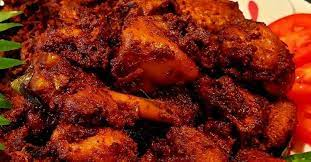
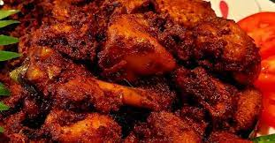

DHE Puttu

 

About Us
We are here with the dream of bringing great food for the people around. Our Approaches reflects the people we serve. We are dedicated, passionate, methodical, deliver on promises and yes practical! We believe that a handshake seals the deal. From the quality of our products to the unparalleled service we provide to our customers, we keep this surety. Dhe Puttu is a landmark in Kochi’s dining scene. We wanted to recreate the taste of our traditional Puttu in an impressive way. The idea behind Dhe Puttu is to showcase different variety of Puttu seen in all parts of kerala under one roof. Each taste brings you those memories we had in our traditionally rich past. We present you an excellent opportunity to take a walk back to those olden days which we used to enjoy our traditional food with their real tastes. Dhe Puttu presents some of the best Puttu flavours around and deliver honestly with the real tastes. Our aim is to excite you completely. We consider Dhe Puttu to be a truly Indian restaurant that honors all different tastes of Puttu. All customers and staff are considered as an integral part of the restaurant and without them we are not complete. Our ultimate goal is to make our guests feel relaxed, nourished and satisfied at all levels of our services and food. At the end, no matter how dedicated and serious we are at work, at Dhe Puttu you can always feel the liveliness of celebrations and enjoyment. We will treat you as if you were dining in your best friends home
OVERVIEW
The idea behind Dhe Puttu is to showcase different variety of Puttu seen in all parts of kerala under one roof. Each taste brings you those memories we had in our traditionally rich past. We present you an excellent opportunity to take a walk back to those olden days which we used to enjoy our traditional food with their real tastes. Dhe Puttu presents some of the best Puttu flavours around and deliver honestly with the real tastes. Our aim is to excite you completely. We consider Dhe Puttu to be a truly Indian restaurant that honors all different tastes of Puttu. All customers and staff are considered as an integral part of the restaurant and without them we are not complete. Our ultimate goal is to make our guests feel relaxed, nourished and satisfied at all levels of our services and food. At the end, no matter how dedicated and serious we are at work, at Dhe Puttu you can always feel the liveliness of celebrations and enjoyment. We will treat you as if you were dining in your best friends home.